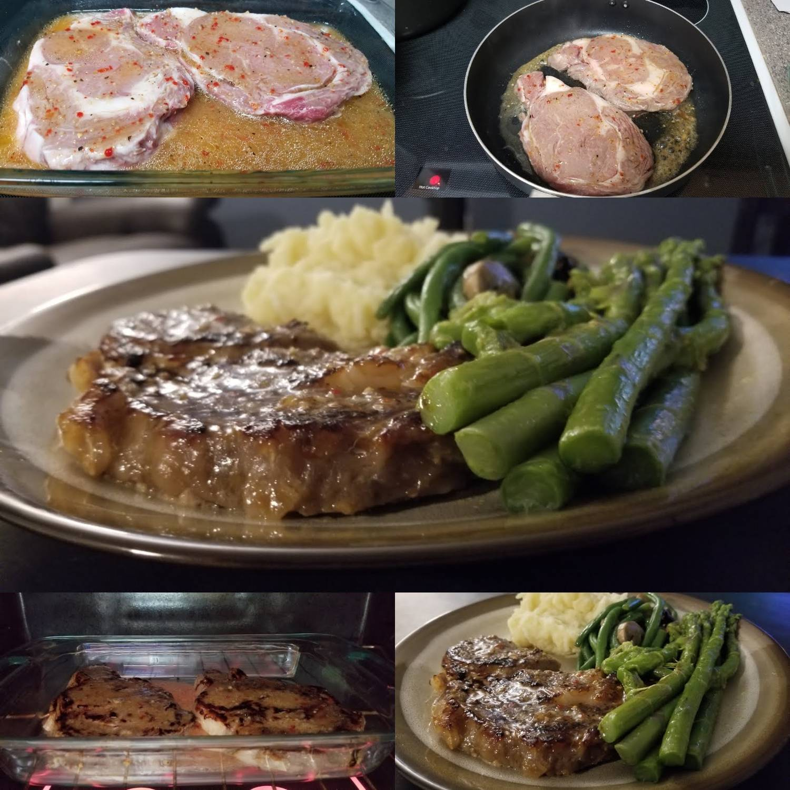

Oven Cooked Ribeye

Description
You don't need a grill to cook a delicious cut of steak. In the realm of rib-eye your oven is just as valuable.
Here's how to do it perfectly every time.
Ingredients
- 1 ribeye
- Extra-virgin olive oil
- Kosher salt
- Freshly ground black pepper
Steps
- Let steak sit at room temperature for 30 minutes.
- Preheat oven to 450°. Rub steak with 1 tablespoon oil then season generously with salt. Season with pepper if
desired.
- Preheat a large oven-safe skillet, preferably cast-iron, over high heat until hot and a drop of water
immediately sizzles and evaporates. Carefully place well-oiled steak in pan and sear until a deeply golden crust
forms and steak begins to pull away, 3 to 4 minutes. Flip steak then transfer immediately to preheated oven.
- Roast until internal temperature of steak is 125° for rare, 135° for medium rare, and 145° for medium, about 8
to 10 minutes.
- Let steak rest for 10 minutes before slicing, against the grain.
Back to main